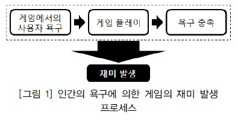
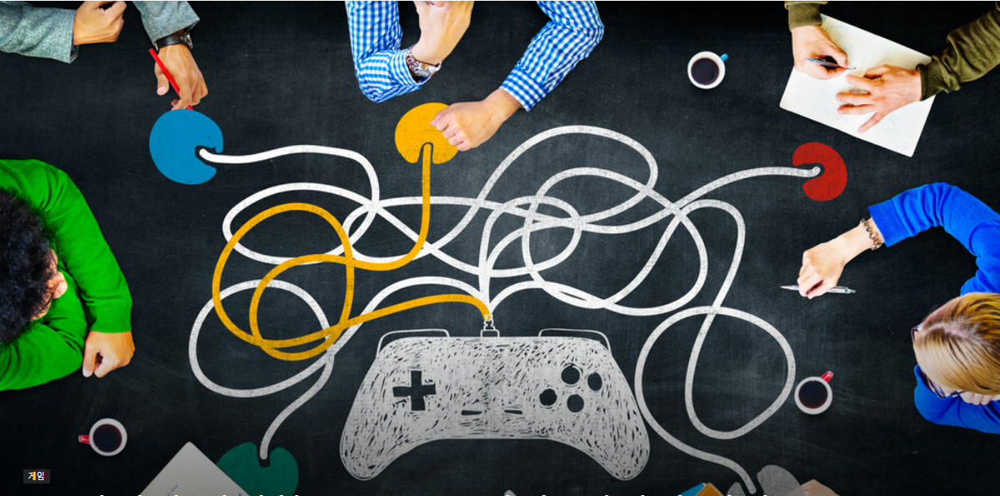
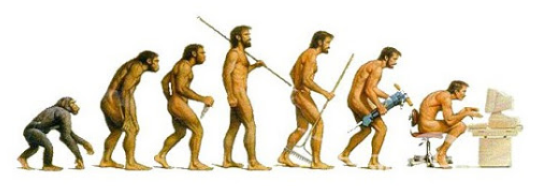
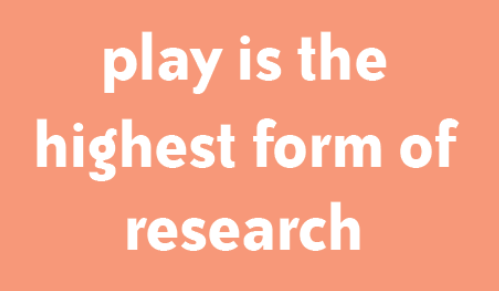
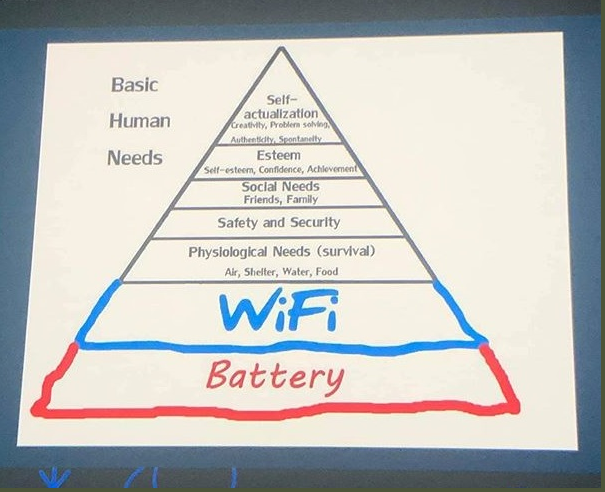
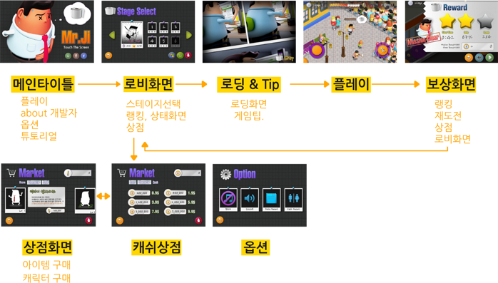

01 · GAME
게임이란
무엇인가
사람의 욕구가 규칙을 만나
선택과 결과를 반복하는 경험


놀이는 인간의
가장 오래된 학습입니다
게임은 단순한 기능 묶음이 아니라
탐색하고, 실패하고, 다시 시도하는 장치입니다.



게임 화면은
관계로 읽습니다
캐릭터, 장애물, 시간, 조작, 보상이
서로 어떤 영향을 주는지 확인합니다.

화면 뒤에는
흐름이 있습니다
장면의 순서와 상태 변화가
플레이어의 다음 행동을 만듭니다.




게임의 기본 구조
세 요소가 따로 존재하는 것이 아니라
하나의 반복을 만듭니다.

RULE규칙무엇을 할 수 있는가
MOTIVATION동기왜 계속하는가
REWARD보상무엇을 얻는가